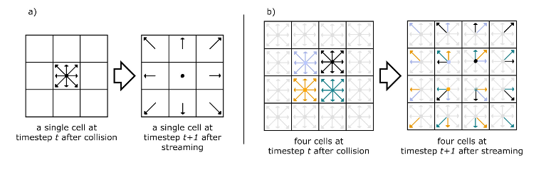
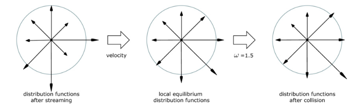
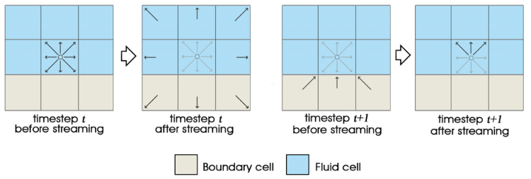
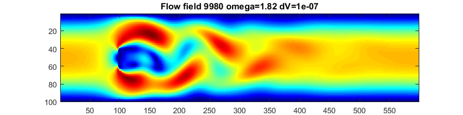
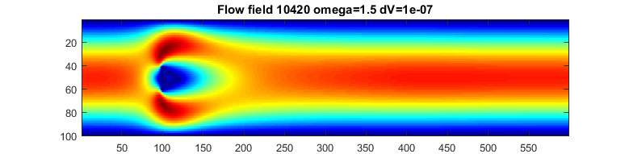
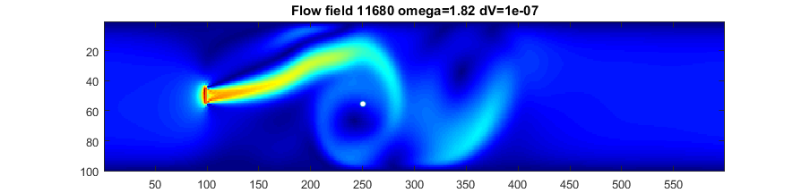
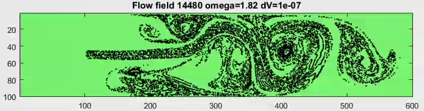
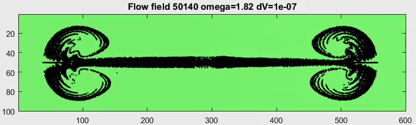

Lattice Boltzmann methods can be used to simulate fluid flow on a grid of cells. The goal is to parallelize the LB calculation onto the FPGA, but there are a few steps to do first. First figure out the algorithm and tune it in matlab. Then 'devectorize' into C. Then build FPGA hardware and parallelize. Nowicki and Claesen give one approach to implementing the FPGA hardware.
The fluid flow is abstracted into continuous-valued densities, flowing in eight discrete directions from a given cell, with zero velocity flow as a ninth flow. Constrains are placed on the densities to conserve momentum and mass. At any time step, eight densities from neighboring cells stream into a cell where they 'collide', are mixed, then on the next time step, stream to new cells. The images below were taken from O'Brien 2008 to show the propagation and collision steps.
Streaming: The distribution for a cell is copied to the eight cells around it. (from O'Brien 2008 )

Collision: Velocity distribution
modeled after He and Luo (1997).

Boundaries are handled by assuming 'no slip' conditions so that streams hitting a boundary cell are bounced back in the direction they came from. The image below is again from O'Brien 2008. Discrete streams that go into boudary cells are returned to the originating cell in the oppposite directions. This slightly more detailed image is from Nicolas Delbosc labeling the density vectors.

Matlab implementation
The first code is a mash-up of the three sources below. The overall framework is from Haslam, but modified to use the simpler (no division) update function of Nowicki and Claesen. The Palabos code was used to understand the scaling of various constants, partcularly the relaxation constant, omega. A frame from the solution(mp4) is shown below with a von Karman vortex street in the wake of the flat plate at x=100.

Laminar flow past the flat plate at lower omega (higher dynamic viscosity).

The second code implements a jet which pushes fliud to the right in a zero velocity medium.
The region has walls top/bottom and is toroidally connected left/right.
There is also a particle (white disc) advected by the flow. (mp4)
Another version has 100 advected particles. (youtube)

A variant injects particles continuously into the jet and surpresses the color coding of velocity. (mp4)(youtube)
One particle per time step is injected into the jet inlet, so the number maxes out at 40000 particles.
With bigger particles (mp4).

A moving velocity source is a model for an interactive simulation or game. A velocity source is
moved along the x-direction with a source speed protional to the movment speed.
The code needs work for stability, but produces nice animation. I suspect that the distribution functions
for fluid speed from the source need work.

A test code implements a square region with a driven edge. A main vortex forms with two weak
vortices in the upper corners.
Comparision with plots in Perumala and Dassb suggests a
Reynolds number of about 1000-2000. (mp4). The velocity pulse at the very beginning of the animation
is a weak sound wave resulting from initial conditions.
C implementation
References
SoC Architecture for Real-Time Interactive Painting based on Lattice-Boltzmann
Domien Nowicki, Luc Claesen
2010 17th IEEE International Conference on Electronics, Circuits and Systems
Year: 2010 Pages: 235 - 238, DOI: 10.1109/ICECS.2010.5724497
Lattice Boltzmann Matlab Scripts
Iain Haslam, March 2006.
Lattice Boltzmann in various languages
from
Palabos is an open-source CFD solver based on the lattice Boltzmann method.
A FRAMEWORK FOR DIGITAL WATERCOLOR
A Thesis by PATRICK O’BRIEN 2008, Texas A&M University
Lattice boltzmann model for the incompressible navier-stokes equation
X. He and L.-S. Luo,
Journal of Statistical Physics, vol. 88, no. 3, pp. 927-944, Aug 1997.
Real-Time fluid Simulation
Nicolas Delbosc; School of Mechanical Engineering University of Leeds, England
Application of lattice Boltzmann method for incompressible viscous flows
D. Arumuga Perumala, Anoop K. Dassb.
Applied Mathematical Modelling Volume 37, Issue 6, 15 March 2013, Pages 4075–4092
Simulation of miscible binary mixtures based on lattice Boltzmann method
Hongbin Zhu , Xuehui Liu, Youquan Liu and Enhua Wu
COMPUTER ANIMATION AND VIRTUAL WORLDS Comp. Anim. Virtual Worlds 2006; 17 : 403–410
Copyright Cornell University June 12, 2017
{kind=link}